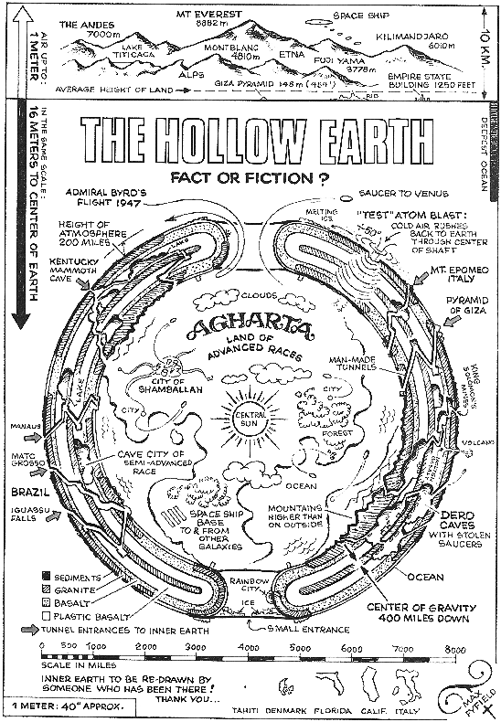

Qui voudrait redescendre sous terre après en être sorti ? Desmond Leslie
Comme la Lune, la Terre n'a pas échappé à des théories étonnantes : après la Terre plate, ceux qui admettent qu'elle est ronde
se mettent naturellement à se demander ce qu'il y a à l'intérieur. Et s'il s'agissait d'une Terre
creuse (hollow earth) ?

Une carte de la terre creuse Fyfield, Max: Shavertron
L'un des premiers à échafauder une telle théorie est Edmund Halley. Alors qu'il étudie
les champs magnétiques terrestres, détectés par des compas, il constate que ceux-ci se décalent avec le temps.
Troublé, il va passer toute une partie de sa vie à essayer d'y trouver une explication, pour finalement avancer une hypothèse ad hoc : une sorte de mécanisme interne à la Terre,
constitué d'un autre "Soleil", de constellations, d'un ciel intérieur. En fait, la reproduction "en creux" du monde où
nous vivons.
L'idée sera reprise en par le vétéran de guerre John Cleves Symmes Junior qui, dans une circulaire
aux institutions d'enseignement, propose la théorie que la Terre est creuse, habitable à l'intérieur, et largement
ouverte vers les Pôles. En il publie sur la question d'un ouvrage de fictionSeaborn, Adam (pseudonyme): Symzonia:
Voyage of Discovery, 1820 < Bailey, J. O.: A Facsimile Reproduction with an Introduction, Gainesville, 1965
à la manière des Voyages de Gulliver (mais aussi apparemment fortement inspiré de la structure de The Man
in the MooneGodwin, Francis: The
Man in the Moone: or a Discourse of a Voyage Thither, 1638), suggèrant que la Terre renfermant des
sphères concentriques qu'il propose de les appeler les terres intérieures d'environ 800 miles d'épaisseur, avec
des ouvertures (un passage que l'on appelera le "trou de Symme") aux pôles d'environ 1400 miles de diamètre, il fait
en une pétition auprès du Congrès pour équiper une expédition pour tester la théorie. En
, il publie un autre livre Symmes, John Cleves Jr: Symmes Theory of
Concentric Spheres promeuvant cette idée. Il meurt 3 ans plus tard.
Par la suite Edgard Poe Poe, Edgard Allan: Les
Aventures de Gordon Pym, 1838 puis bien sûr Jules Vernes Verne, Jules: Voyage
au centre de la Terre, 1864, Edgar Rice Burroughs Burroughs, Edgar Rice: Au
cœur de la Terre, Willis George Emerson Emerson, Willis George: The smoky god or
a voyage to the inner world, Chicago Forbes & Company, 1908 — Roman mettant en scène le voyage d'Olaf Jansens avec son père en
mais aussi Edward Bulwer Lytton Lytton, Edward Bulwer: La Race à venir... celle qui nous
exterminera, un livre qui deviendra la bible de la société du Vril, créée pendant la guerre et
d'obédience nazie.
Byrd
Par la suite, on prétendra que l'expédition polaire de l'amiral Byrd aurait fait des observations de vaisseaux aériens très avancés.
Palmer
C'est ensuite en que Ray Palmer, à la recherche d'histoires
sensationnelles à publier, repère un certain Richard Sharpe Shaver, qui prétend entendre
depuis des années des voix pendant qu'il soude. Ces voix lui expliqueraient comment les Deros, des créatures vivant sous terre, contrôlent la vie à la
surface de la Terre à l'aide de rayons maléfiques. Ses histoires, qui remportent un franc succès, sont publiées dans
un magazine jusqu'en . Le magazine Life évoque à nouveau les théories de Shaver en .
Photo composite réalisée à partir des images de 13 passages du satellite ESSA-3 le
En , Palmer titre dans son magazine Flying Saucers : Les premières photos
du trou au pôle ! en montrant l'image satellite composite (partielle, sans le pôle) prise par ESSA-7 le .
Les théoriciens d'un Soleil intérieur ne s'étonnent pas de ne pas y voir de lumière.
En , lorsque Palmer publie d'authentiques photographies de satellite qui montrent ce qui semble être un énorme
trou noir au Pôle Nord, les théoriciens de la Terre creuse du monde entier trouvent leurs croyances confirmées — et
la controverse commence : la Terre est-elle vraiment creuse ? Et de tels trous existent-ils aux pôles ?
La possibilité que la Terre soit creuse, qu'elle puisse être pénétrée par des trous aux pôles Nord et sud, et que
des civilisations secrètes florissent toujours en son sein (telles les Deros et Teros
de Shaver), a été imaginée depuis des temps immémoriaux. On
raconte que le héros babylonien Gilgamesh, à la recherche de l'immortalité, avait visité un ancêtre, Utnapishtim ;
dans les entrailles de la Terre ; le héros Grec Orphée tente de sauver sa femme morte Eurydice d'un enfer souterrain
; on disait que les pharaons d'Egypte connaissaient le monde souterrain, qu'il pouvaient rejoindre au travers de
tunnels secrets cachés dans les pyramides, les Incas, fuyant les pillards espagnols, auraient transporté la plupart
de leur trésor dans la "Terre intérieure" ; et les boudhistes croient depuis longtemps que des millions de personnes
vivent à Agharta, un véritable paradis souterrain.
Cependant, le "trou" de la photo ne reflètait que la limite de
couverture photographique du satellite, qui, depuis son orbite, n'allait
pas jusqu'aux pôles, comme de nombreuses autres panoramas satellitaires.
Plus tard, Raymond Bernard A ne pas confondre avec son homonyme feu Grand Maître de l'AMORC exploite encore cette idée Bernard, Raymond: The Hollow Hearth, 1969 < traduit La
Terre creuse, Albin Michel, 1971.
Détournements
NASA
Les expéditions polaires ou l'avènement de l'ère spatiale, paradoxalement, ne mettent pas complètement un terme à
la théorie de la terre creuse : certaines images satellites montrent des dépressions troublantes
Par la suite sont publiées des photos de la Terre prise par la mission Apollo
11. Certains disent y voir un trou. Mais cette photo, prise le peu après le lancement
à 180000 km de distance, ne montre cependant qu'une zone plus contrastée car sans nuages, et pas au-dessus du
pôle, mais aus-dessus de la Russie.
Un autre trou ? Non, encore juste une zone moins nuageuse, qui ne se trouve toujours pas au pôle nord
(point blanc) Admin : "Le
mythe des ouvertures polaires", Lumière du Réel
Une autre photo qui semblera montrer un trou vient d'Apollo 16. Prise
le . Il s'agit encore une fois d'une zone moins nuageuse, non pas au nord de l'Alaska, mais
à l'ouest, dans la mer de Behring.
Une dépression au pôle nord ? Non, la région plus boisée Cobar Peneplain, en Nouvelle-Galles du Sud en
Australie, et un reflet de la main de l'astronaute qui prenait la photo à bord de STS 075. Admin: "Le
mythe des ouvertures polaires", Lumière du Réel
Images de synthèse
La couverture de Zeiten Schrift
n° 1, présentant un article sur la théorie de la Terre creuse. L'image sera présentée tronquée, comme une
photo spatiale. Admin : "Le
mythe des ouvertures polaires", Lumière du Réel
Un autre exemple est celui d'une photo régulièrement présentée comme preuve d'une terre creuse, éclairée de
l'intérieur, qui n'est en fait qu'une illustration réalisée par Dominique Dreyer pour le n° 1 de Zeiten Schrift. Assez
ironiquement, c'est donc un article de partisan de la Terre creuse Seiler-Spielmann, Ursula: "Die
Die Erde Ist Hohl", Zeiten Schrift, 1993-11 qui a été détourné comme fausse preuve de cette théorie.
Animation de Kev Connolly, intrégrée dans son
film simulant l'émergence d'un trou noir au CERN de Genève Admin: "Le
mythe des ouvertures polaires", Lumière du Réel
Les vidéos pouvant, elles aussi, être tronquées, on retrouve aussi l'exemple d'un film de Kev Connolly, mêlant images d'archives et images
de synthèse simulant l'hypothèse d'un trou noir se créant lors d'expériences du CERN en Suisse. Un extrait de
cette video du trou noir, le , est repris, prétendant montrer une ouverture au pôle nord
"Tierra Hueca - ¿Apertura Polar
Norte?", Erks.
Une expedition reportée, puis annulée
Ne serait-il pas plus simple d'aller voir directement sur place ? C'est ce que propose en
l'explorateur de fleuves Steve Currey via un site web
proposant un voyage en terre creuse en passant par une ouverture supposée au Pôle Nord (latitude 84.4 Nord,
longitude 141 est), à bord du brise-glace russe Yamal, du . Les passagers sont
invités à verser entre 18950 $ et $20950 $ pour y participer, sans que leur soit garanti aucun succès.
En la date de l'expédition est repoussée de 1 an, puis à nouveau de 1 an en
. Le cependant, Currey apprend qu'il a 6 tumeurs au cerveau. Il décède
le "Obituary:
Steven Clark Currey", Deseret News, 2006-07-29.
Après la mort de Currey, Marcelo Martorelli (qui se fait appeler "E s h a e l'), convaincu mystique de l'existence
de la terre creuse avec qui il préparait l'expédition, reste silencieux pendant plusieurs mois, avant de déclarer ne
pas abandonner l'idée d'une expédition, mais en la rencentrant sur sa base spritituelle : "Lettre
ouverte à nos amis expéditionnaires", Ascension Planétaire.
Pour qu’un être humain de la surface puisse accéder au Royaume de la Terre intérieure, il doit tout d’abord
parvenir à son propre royaume intérieur. (...)
Louer un bateau, un avion ou autre, correspond à vouloir pénétrer chez EUX par nos propres moyens et ce, sans
LEUR invitation ou autorisation. Vous semble-t-il, nobles amis, qu'une telle attitude soit susceptible de nous
conduire à bon port ? (...)
L'approche exigée est celle de notre propre transformation, celle de la voie alchimique. L'expédition ne devra
pas être entreprise dans une optique exclusivement scientifique ou touristique. Elle devra être prioritairement
envisagée comme un voyage initiatique, même si la science et l'aventure pourront y avoir leur place, mais
uniquement dans une phase secondaire et ultérieure.
Il publie divers livres à cet effet Martorelli, Marcelo : L'Appel Planétaire des Maîtres de
la Terre Creuse, HeliosMartorelli, Marcelo : Contact physique établi, l'Appel
planétaire N° 2, Helios
Nazis ?
En , une video montre une prétendue carte nazie de détaillant un passage de
sous-marin (U-Boat) pour accéder à un domaine souterrain sous l'Antarctique, ainsi que le monde intérieur
de Agharta, Asgard et Liberia.
Et la physique ?
Que nous dit la science sur une hypothétique Terre creuse ?
Météorologie
La dynamique des vents ne serait pas celle qu'elle est si il y avait ces gigantesques ouvertures aux pôles. A la
vue des nombreux domaines qui seraient concernés par le très large impact que cela aurait sur eux, il n'est juste
pas possible qu'il y ait des trous faisant plusieurs centaines de kilomètres de diamètre.
Sismologie
Les ondes P de l'épicentre d'un séisme ne se propagent pas qu'à travers la croute, mais aussi jusqu'à
l'opposé du globe, via son cœur interne solide et son cœur externe liquide
Lorsqu'un tremblement de terre a lieu, il a des impacts secondaires sur d'autres parties du globe, de par la
propagation à travers le globe.
La vitesse de propagation d'une onde dépend en effet de la densité de la matière dans laquelle elle se propage.
La vitesse des ondes de compression notées P est de 330 m/s dans l'air, 1450 m/s dans l'eau et aux environs de
5000 m/s dans le granite. Si le manteau de la terre contenait de l'air en lieu et place des matières solides
plastiques, non seulement la vitesse de propagation serait très fortement diminuée, mais en plus l'intensité de
l'onde elle-même serait extrêmement vite atténuée, et les vibrations traversant la terre ne se transmettraient pas
jusqu'au côté opposé du globe, il n'y aurait qu'une propagation par la croûte terrestre.
Or les études montrent que dans la propagation des ondes, il y a une zone circulaire à l'opposé du globe qui
constitue une zone d'ombre pour les ondes P, avec au-delà à l'intérieur de ce cercle, de nouveau de puissantes
ondes P. Cela signifie que ces ondes P n'ont pas pu passer par la croute terrestre, et qu'elles ont donc traversé
l'intérieur de la terre, ce qui est impossible avec le modèle de la terre creuse.
Planétologie
Il existe également des arguments théoriques relatifs à la formation des planètes et des astres en général
(accrétion, gravité)
Photographie en ultraviolet d'une aurore boréale sur Jupiter Télescope spatial
Hubble, ESA, NASA < Clarke, John T. (Université du Michigan)
Les phénomènes d'aurores aux pôles, qui se produisent sur Terre comme
sur d'autres planètes,
et leurs photographies ont parfois été interprétées comme des preuves de la théorie de la terre creuse.


{kind=link}